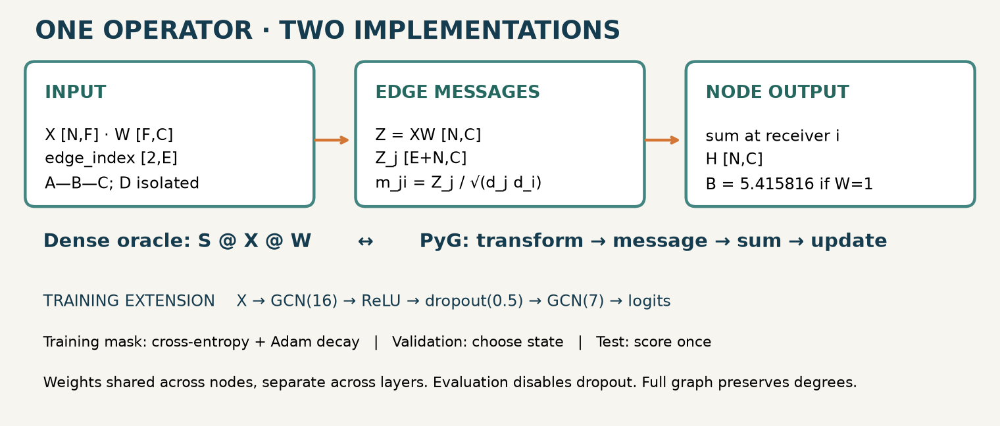

Year 3 · Quarter 1 · Lesson 086
PyG fundamentals: preserve the graph computation
Retrieval before reading · 3 minutes¶
Close lesson 82. Write the shape of X, edge_index and W for a four-node graph with three features and two output channels. Which row of an edge list names the sender? Which labels may contribute gradients in transductive training? Why must degrees include self-loops?
Check after committing your answer
X: [4,3]; edge_index: [2,E]; W: [3,2]. With source_to_target, row 0 is the sender, row 1 the receiver. Training labels supervise the objective; validation labels select the checkpoint. Add loops before measuring augmented degrees.
One win: change the implementation without changing the operator¶
In lesson 85, deeper propagation could erase distinctions. Before testing a remedy, we need confidence that a library port still computes our intended graph operator. Your deliverable is a PyG GCN that matches lesson 82's outputs and gradients, plus an audited sampled batch. Allow 25 minutes for the core; run the complete benchmark separately.
PyG supplies graph containers and routing machinery. You still choose normalization, messages, supervision and evaluation. This is the tooling foundation for relational graphs: table-specific node IDs and labeled seed entities will soon replace the single Cora node space. Fey & Lenssen, primary paper.
Data: the graph is a set of aligned tensors¶
Data(x=x, edge_index=e, y=y, num_nodes=N) groups tensors; it does not enforce your split policy. Features have shape [N,F], labels [N], and integer edges [2,E]. Under source_to_target, edge column [j,i] sends j's message to i. An undirected edge needs both directions. Set num_nodes explicitly when features are absent so isolated nodes survive inference of graph size. Data API.
x = torch.tensor([[2.], [4.], [8.], [10.]])
edge_index = torch.tensor([[0, 1, 1, 2], [1, 0, 2, 1]])
data = Data(x=x, edge_index=edge_index, num_nodes=4)
A—B—C is a path; D is isolated. data.validate() checks index consistency, not whether you accidentally included future edges. The lab checks directed routing separately because reversing every edge of an undirected graph can conceal an orientation bug.
Trace the GCN through MessagePassing¶
For the unweighted undirected graph, add one self-loop per node and calculate d = [2,3,2,1]. Each j→i message is (XW)[j] / sqrt(d[j]*d[i]). The receiver sums incoming messages. With W=1, B receives 2/√6 + 4/3 + 8/√6 = 5.415816. D receives its own transformed feature only.
Predict what changes if C becomes 20. Then move the control. The degrees and weights remain fixed; only one message changes. The ordinary mean is shown as a separate operator.

forward transforms features and computes edge coefficients. propagate orchestrates the following methods: message lifts source features into one row per edge; aggregate sums by destination; update receives the reduced node tensor. The default update is identity; our optional bias is added there. x_j means sender features, not a second independent input. MessagePassing API.
class TraceGCN(MessagePassing):
# Constructor creates W and calls super().__init__(aggr='add').
def forward(self, x, edge_index):
edges, norm = normalized_edges(edge_index, len(x), x.dtype)
return self.propagate(edges, x=x @ self.weight, norm=norm)
def message(self, x_j, norm):
return norm[:, None] * x_j
The notebook contains the entire class and normalization, not an opaque import. Use bias=False for lesson 82 operator parity. Copy the same W into both implementations and disable dropout. Similar accuracy alone cannot certify identical computations. Compare the gradients of a shared scalar objective with respect to both X and W.
Two meanings of “batch”¶
Batch.from_data_list([g1,g2]) makes a disjoint union: concatenate node features, offset the second graph's edge IDs, and retain a batch vector mapping each node to its graph. There are no cross-graph messages. This prepares graph classification in lesson 88. Batch API.
NeighborLoader instead samples a computation graph around seeds from one larger graph. A two-layer model normally needs two sampling hops. With fanouts [10,5], a loose tree-shaped bound per seed is 1+10+50 nodes; shared neighbors reduce it. The hop list describes outward sampling from seeds, not a list of hidden layer widths.
loader = NeighborLoader(data, input_nodes=train_mask,
num_neighbors=[10, 5], batch_size=64)
for batch in loader:
logits = model(batch)
loss = F.cross_entropy(logits[:batch.batch_size],
batch.y[:batch.batch_size])
The first batch_size nodes are seeds. The rest supply context. batch.n_id maps local node IDs back to the original graph; recover original edges with batch.n_id[batch.edge_index]. A batch seeded at global node 1 may place it at local node 0. Never use local IDs to index the original label array. Sampling requires a compatible compiled backend such as pyg-lib. The reproduction guide records the tested build. NeighborLoader source and contract.
Prediction: if you flip labels of context nodes but keep seeds unchanged, should seed loss or its gradients change? The lab proves they do not. Context features can still affect seed predictions. This is expected in a transductive setting; availability of future relational features must be audited separately.
GCN sampling trap: recomputing degrees on a sampled subgraph changes normalization. Even all-neighbor sampling for a fixed number of hops does not necessarily preserve boundary-node degrees. The lesson's exact GCN parity and benchmark therefore use the full graph. The loader lab tests identity and supervision contracts; it does not claim sampled/full GCN equality. For exact evaluation, preserve full-graph coefficients and all required message paths, or use the full graph.
HeteroData: IDs have a type¶
h = HeteroData()
h['author'].x = torch.ones(2, 3)
h['paper'].x = torch.ones(3, 4)
h['author', 'writes', 'paper'].edge_index = torch.tensor([[0,1],[1,2]])
Author 0 and paper 0 are different entities. The relation key is (source type, relation, destination type); each edge row indexes its own node store. A reverse relation must be created explicitly when messages should flow backward. Different feature widths also require type-specific projections. Full heterogeneous modeling follows in lesson 98. HeteroData API.
Full reproduction: name the protocol before running¶
The named extension is Fey & Lenssen, Table 1, GCN on fixed-split Cora: 81.5 ± 0.6% over 100 runs. The complete graph contains 2,708 nodes and 1,433 features; label masks contain 140 training, 500 validation and 1,000 test nodes. Seeds here are 0–99. Paper §3.
We archive PyG release 1.2.0 at d5aff37604c8e3247f5e807f2ba0ec6eeb4c661b. It supplies an auditable implementation of the citation experiment, but its identity as the exact paper-run revision is unconfirmed. Crucially, this benchmark differs from the original Kipf TensorFlow release used in L082:
| Choice | L082 release port | Historical PyG citation benchmark |
|---|---|---|
| Bias | None | Both layers |
| Dropout | Sparse input and hidden | Hidden only, p=0.5 |
| Regularization | First weight matrix only | Adam weight decay on all parameters |
| Stopping | After initial 11 epochs | Only after epoch 100 |
| Selected state | Last weights | Lowest validation cross-entropy |
The PyG run uses hidden width 16, ReLU, Adam at 0.01 with weight decay 0.0005, and at most 200 epochs. After epoch 100 it stops if validation loss exceeds the preceding ten-loss mean. Test scoring occurs once after restoring the validation-selected state. The archived code scored test each epoch; deferring that read preserves its selection decision while making label isolation explicit. Archived model · Archived trainer.
Fresh author execution: 100 full-schedule runs; mean test accuracy 81.305%, sample SD 0.714 percentage points. These runs share one fixed graph and split; the SD measures initialization variation, not uncertainty across datasets. See machine-readable results.
This is a full-size modern reconstruction of one table cell, not the complete PyG paper. Original seeds and exact historical environment are unavailable; historical execution parity remains INCOMPARABLE. Runtime Table 4 on a GTX 1080 Ti, other datasets, and random-split experiments are NOT_RUN. A passing arithmetic test is implementation evidence, not paper-result reproduction.
Lab: three live edits and an exit artifact¶
Open the student notebook. Implement weighted_messages, seed_loss and global_edges; each feeds an executed check or model. The solution includes complete visible code for the Cora loader, model and trainer. The short notebook run uses one full-schedule seed; set RUN_FULL=True to execute all 100. Do not confuse the displayed author results with a fresh run in your kernel.
Submit l086-exit.json with: output/gradient parity tolerances, the real sampler's n_id and remapped edges, proof that context labels do not supervise training, and your benchmark protocol/results. Explain why a sampled GCN can differ even when its MessagePassing class is correct. Re-answer that question tomorrow without opening the lesson.
Read the paper, then the linked APIs. Keep the compact reference and reproduction instructions. Ask the agent about any unclear tensor shape or failed check; bring the smallest failing graph. Lesson 87 adds a new split problem: hiding edges for link prediction.